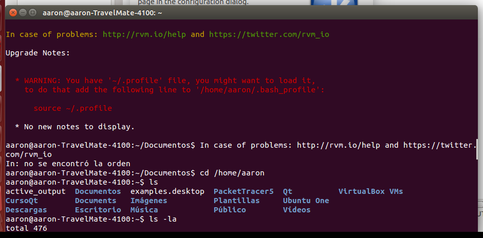
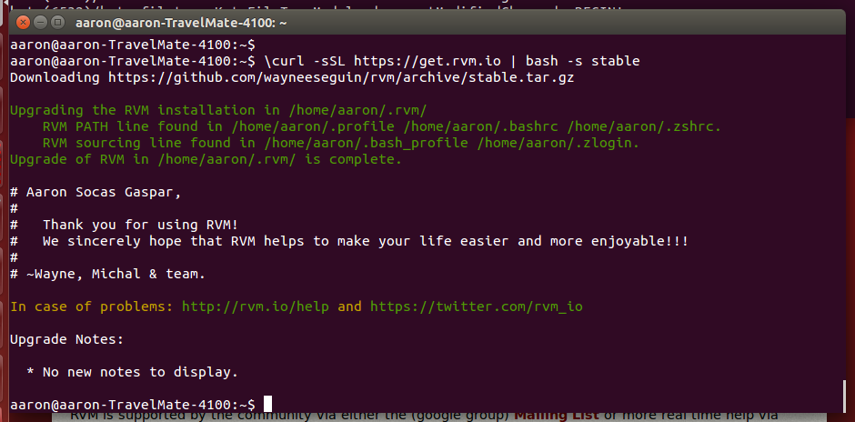
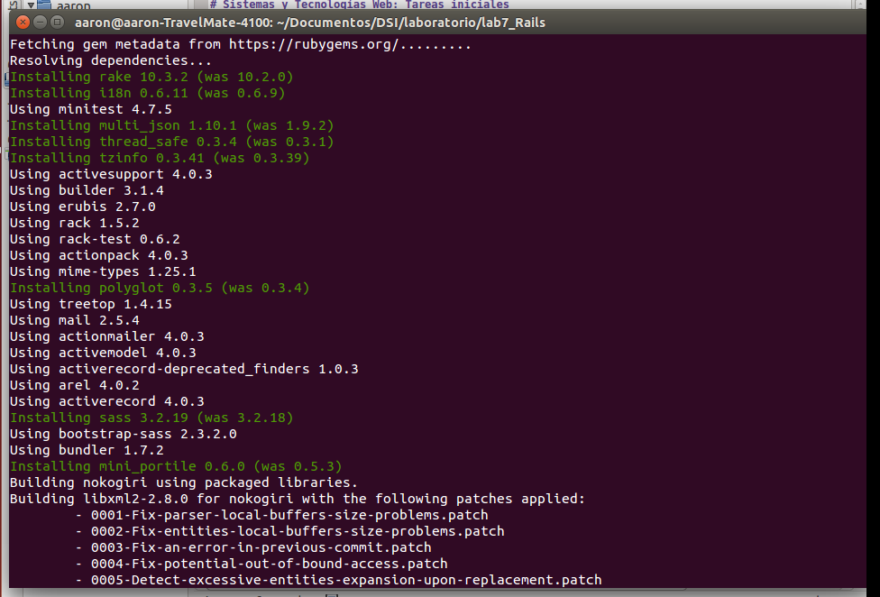

Sistemas y Tecnologías Web: Tareas iniciales
Autor: Aarón Socas Gaspar
Instalación de RVM
En mi caso he elegido la opción de RVM, aunque ya lo tenía instalado porque lo he usado en otras asignaturas. Sin embargo, para instalarlo accedemos a este enlace .
Allí seguimos las instrucciones de instalación. Es muy importante no ejecutar el comando de instalación como root o administrador:
$\curl -sSL https://get.rvm.io | bash -s stable
Me encontré con un problema sobre el archivo profile pero que pude resolver, a continuación se muestran las capturas de pantalla:

Seguimos las instrucciones, editamos nuestro bash y solucionado:

Ruby
Ya tengo instalado ruby en mi equipo:

Para instalarlo en Linux (Debian/Ubuntu):
$sudo apt-get install ruby
Existen muchas formas de instalar Ruby en nuestro ordenador, aquí se explican varias de ellas.
bundler
Comprobemos que el comando bundler funciona, para ello debemos acceder a alguna carpeta donde tengamos gemas. En mi caso accedo a proyectos donde ya las he utilizado.
Es importante definir correctamente la versión de ruby en nuestro Gemfile .

Gemas: sinatra, twitter
sinatra
$sudo gem install sinatra

$sudo gem install twitter

Git
Ya tengo instalado el git en mi equipo. Comprobamos la versión:

Para instalar el git en Linux (Debian/Ubuntu):
$apt-get install git
Podemos obtener ayuda para la instalacion aqui .
Recursos
- http://kramdown.gettalong.org
- http://makandracards.com/makandra/6683-markdown-kramdown-examples
- https://www.ruby-lang.org/es/downloads/
- https://github.com/
Aarón Socas Gaspar - Sistemas y Tecnologías Web (Curso 2014-2015)